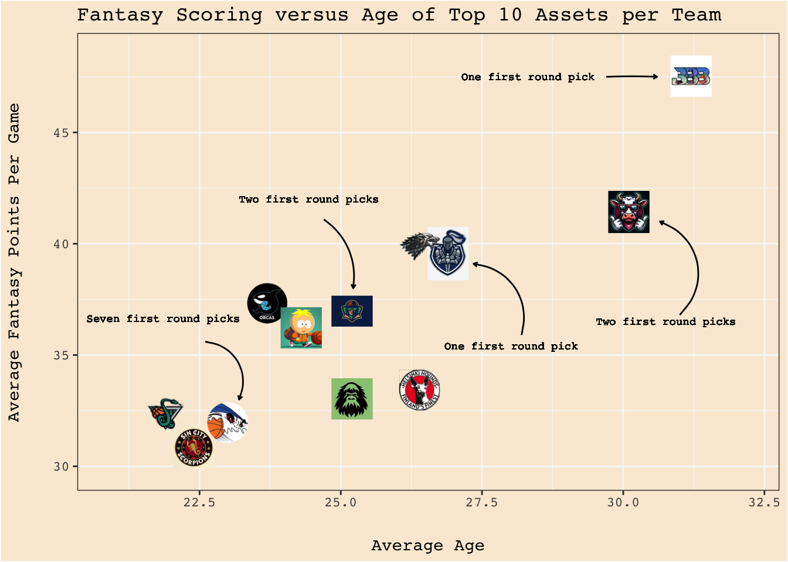
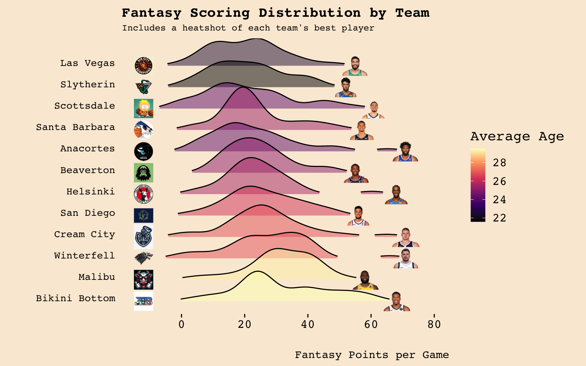

Visualizing the dynamics between fantasy scoring and age in the A.S.S. League
R
MEDS
Sports
Published
March 9, 2024
Introduction
In this blog post, I’ll dive into some fantasy basketball data visualizations. One of our classes this quarter, Data Visualization and Communication (EDS240), has really opened my eyes to how critical data communication is through visual means, how the smallest changes that an observer might not bat a second glance at can change everything, and how narrative is imperative in creating a visual for a specific (or general) audience. Building beautiful, crisp visualizations takes time and attention to details, and the class has been a fun and informative deep dive on the different layers that go into building these kind of visuals.
A.L. Linall Jr frames the power of visualization well: “Visualization and belief in a pattern of reality activates the creative power of realization.” (CITE). Interpreting raw data is not fun for anyone, but staring at a beautiful scatter plot, stacked area plot, ridge line plot, or heat map can make the process of digesting data more enjoyable. Further, a detailed and aesthetically pleasing visual can guide the observer towards a key takeaway that the creator intended. It is almost impossible to remove all biases and keep all of the important information from a dataset when creating a visual. Therefore, it is important to keep in mind what story the visualization is feeding you into as a consumer.
For this final assignment, I will be constructing three different visuals that investigate the dynamic of a dynasty format fantasy basketball league that I am in. Each visual will be tailored for a certain audience: one for a general audience without domain expertise, one that would go well in a presentation, and one for domain experts, or people who know a lot about how dynasty leagues work.
Background
I have been in this fantasy basketball league for a few years, but we just switched over to a dynasty format this offseason. Dynasty league formats exist for all fantasy sports, and they are leagues where managers keep their entire roster each season. Most fantasy leagues are redraft format, where there is a full draft each year where teams draft entirely new rosters. In the dynasty format, there is simply a rookie draft where managers only select from the rookie player pool to keep building their rosters. In this sense, a dynasty league is more like being a GM of an NBA team, where players are kept year over year and new players are acquired through trades or the rookie draft. Personally, I have loved this format as it completely changes the dynamic of assessing a player’s value. More on this later.
Starting a dynasty league can be tricky. The most important distinction between redraft versus dynasty leagues is that all league members must be in it for the long haul - having a team bail after a year or two, for whatever reason, can cause issues if the league is not able to find a replacement. Also, some people might not be as excited about the dynasty format because they may not ever have the opportunity to draft certain players, especially top-end young players, because their value is higher in dynasty formats than redraft leagues. While the dynasty format is not for everyone, I am lucky to be in a league where everyone is engaged, active, and excited about the format. As rookie league member Danny put it, “What other league gets reprimanded for talking too much ball at work?”.
Leading up to the draft, I think there was a balance of teams that wanted to draft young players and compete for a championship in future years and teams that wanted to get players that could help them be competitive this season. This played out accordingly on draft night, with only two or three teams going young player heavy while the rest of the league went with a more diverse selection of young and older players. However, as the season went on, a few teams really pivoted their dynasty strategy (especially my team) to get younger due to how strong the top of the league is this season. The Bikini Bottom Ballers solidified themselves as one of the greatest dynasty rosters ever assembled, ending the season with a 17-1 record and having over 4000 more fantasy points than the second closest team. During the season, the Ballers acquired even more win-now talent to add on to the players and now have a roster full of win-now players: Kevin Durant, Anthony Davis, Giannis Antetokounmpo, Kawhi Leonard, and Kyrie Irving to name a few. The Ballers are the clear favorites to win the championship this season, but it will be interesting to see how long their reign over the league lasts with many of their players being older and beginning to decline. Anyways, I’m getting ahead of myself as these will be investigated in the following visuals.
For more context, my roster transitioned from win-now to building for the future over the course of the season. I had some talented older players on my roster in the beginning of the season, like Kevin Durant and Paul George. Once I realized that the Ballers had such a strong roster that would be hard to beat come playoff time, I made a bunch of trades to build around my teams cornerstone, and arguably the most valuable dynasty asset of all time: Victor Wembanyama. While he is just a rookie, Wemby has put up some insane numbers this season and is looking like he will be a top player as early as next season. Wemby is only 20 years old and is already averaging over 50 fantasy points per game, vaulting himself into unprecedented terrain when it comes to rookie fantasy performance in the modern era. In a recent league survey, the Santa Barbara Swell (my team, by the way the team names and logos in the league are pretty epic) was voted as the team that others would most want to swap rosters with. What an honor!
Setting the Scene
Question: What are the dynamics between age and fantasy scoring across teams in the fantasy league? Which teams are going all in now, and which are looking to build rosters with talented younger players?
Data
Now it’s time to do a little exploration to understand the data that is being worked with. The platform we use for the league, Fantrax, allows for easy downloading of data in CSV formats. I’ll start by importing the data, doing some simple cleaning so it will be ready for further wrangling and analysis. This code is hidden for the reader’s convenience so we can get right to the data exploration.
Columns of Interest
Below is a list of the column names in the cleaned data set (rostered):
Most of the columns in the data are statistical categories, like points, rebounds, assists, turnovers, etc. The columns that are most important for this analysis are the age (age), fantasy scoring (f_pts and fp_g), and fantasy team (fantasy_team) columns. Throughout the analysis, summary tables utilizing information from these columns will be generated as needed.
Limitations
I was hoping that Fantrax would save the fantasy team that each player was on at a certain point in the season, but unfortunately this is not the case. For example, I traded for Jalen Duren right before the trade deadline on February 9th, but when downloading data from the first week of the season, it says that Duren was on my roster at this time. I was curious to see if I could track how fantasy rosters changed over the course of the season, but this reality makes that nearly impossible to do as I would have to enter data manually. Instead, I will focus on data from February 26th, which is just 2 weeks out of the fantasy playoffs and gives a good sense of where teams are at towards the end of the season in terms of roster construction.
Approach
For the three graphs, I will be creating a scatter plot, a ridge line plot, and a sunburst plot for the domain expert, general audience, and presentation groups respectively. Each of the plots takes a different look at the dynamic between age and fantasy scoring across each of the fantasy teams. The motivation for choosing each specific graphic form will be discussed after each graph is shown in the next section.
While I played around with different basketball related themes, I will be going with a simple background that is a similar color to NBA courts. Two graphs have all of the team logos (scatter and ridge line), and the sunburst plot is extremely colorful with lots going on, so I opted for keeping the background simple and minimizing distractions from the visualizations. I defined custom colors based on teams logos that are used in the sunburst plot to add to the aesthetics of the visual as there are lots of colors going on. Additionally, I chose the Courier font as the go-to for all three visuals, as it is a crisp and easy-going font that has just the right amount of character.
While DEI has been highlighted in our lecture materials and some other assignments in EDS 240, this analysis does not fit into the category of DEI application.
Analysis
Plot 1: Scatter plot
Code
# Importing librarieslibrary(ggimage)library(ggtext) # Set font for annotations# Rank players within each team by their fp_g and filter for the top 10 assetstop_players <- rostered %>%group_by(fantasy_team) %>%filter(player %in% top_assets)# Calculate average age and fantasy points per game by fantasy team (top 10 assets)team_averages <- top_players %>%group_by(fantasy_team) %>%summarise(AverageAge =mean(age, na.rm =TRUE),AverageFpG =mean(fp_g, na.rm =TRUE) ) # Add logo and logo path for each teamteam_averages$logo_path <-c("images/orcas_logo.png", "images/bigfoots_logo.png","images/ballers_logo.png", "images/crusaders_logo.png","images/hounds_logo.png", "images/scorpions_logo.png","images/milkers_logo.png", "images/pilots_logo.png","images/swell_logo.png", "images/stotches_logo.png","images/serpents_logo.png", "images/starks_logo.png")scatter <-ggplot(team_averages, aes(x = AverageAge, y = AverageFpG)) +geom_image(aes(image = logo_path), size =0.09, alpha =0.7) +labs(title ="Fantasy Scoring versus Age of Top 10 Assets per Team",x ="Average Age",y ="Average Fantasy Points Per Game" ) +theme_bw() +theme(text =element_text(family ="Courier"),plot.background =element_rect(fill ="antiquewhite"), # Set background colorpanel.background =element_rect(fill ="antiquewhite"), # Match panel background panel.grid.major =element_line(color ="#f7f7f7"), # Grid lines fainter colorpanel.grid.minor =element_line(colour ="#f7f7f7"), # Grid lines fainter coloraxis.title.x =element_text(margin =margin(20, 0, 0, 0, "pt")), # Adds spaceaxis.title.y =element_text(margin =margin(0, 20, 0, 0, "pt")) # Adds space ) +expand_limits(x =c(min(team_averages$AverageAge) -1, max(team_averages$AverageAge) +1),y =c(min(team_averages$AverageFpG) -1, max(team_averages$AverageFpG) +1)) # Stretch axesscatter +geom_text( # BB textx =29.5,y =47.5,label ="One first round pick",size =2.5,color ="black",hjust ="inward",family ="Courier" ) +annotate( # BB arrowgeom ="curve",x =29.7, xend =30.6,y =47.5, yend =47.5,curvature =-.02,arrow =arrow(length =unit(0.1, "cm")) ) +geom_text( # MM textx =32,y =36.5,label ="Two first round picks",size =2.5,color ="black",hjust ="inward",family ="Courier" ) +annotate( # MM arrowgeom ="curve",x =31, xend =30.65,y =36.8, yend =41,curvature = .6,arrow =arrow(length =unit(0.1, "cm")) ) +geom_text( # SB textx =20.5,y =36.65,label ="Seven first round picks",size =2.5,color ="black",hjust ="inward",family ="Courier" ) +annotate( # SB arrowgeom ="curve",x =22.6, xend =23.2,y =35.6, yend =33,curvature =-0.55,arrow =arrow(length =unit(0.1, "cm")) ) +geom_text( # CC textx =29.2,y =35.4,label ="One first round pick",size =2.5,color ="black",hjust ="inward",family ="Courier" ) +annotate( # CC arrowgeom ="curve",x =28.2, xend =27.35,y =35.9, yend =39.1,curvature =0.5,arrow =arrow(length =unit(0.1, "cm")) ) +geom_text( # SD textx =23.2,y =42,label ="Two first round picks",size =2.5,color ="black",hjust ="inward",family ="Courier" ) +annotate( # SD arrowgeom ="curve",x =24.7, xend =25.22,y =41.1, yend =38,curvature =-0.3,arrow =arrow(length =unit(0.1, "cm")),family ="Courier" )

This plot investigates the average age and fantasy points per game of the top 10 assets on each fantasy team. While there is no perfect number of assets to choose (5, 10, 15), there are 10 starting spots for each night of fantasy play, so it seemed like an appropriate choice. The plot reveals that teams whose top assets are older tend to have higher average fantasy points scoring. A scatter plot is a great plot to visualize this relationship as it clearly displays each team’s top assets as individual points, allowing for the direct observation of the relationship between average age and fantasy points per game. By representing each team’s top assets as individual data points, the scatter plot allows for a direct examination of how age and fantasy points per game are related across the league. The x-axis represents the average age of a team’s top 10 assets, providing a clear measure of the overall experience and veteran presence on each roster. The y-axis displays the average fantasy points per game for those top assets, quantifying the offensive output and statistical production of each team’s core players.
One of the key strengths of using a scatter plot in this context is its ability to reveal patterns, trends, and potential outliers in the data. The plot clearly shows a clustering of teams in the upper-right quadrant, indicating that teams with older top assets tend to have higher fantasy points per game averages. This visual representation makes it easy to identify the teams that have prioritized veteran talent and are currently enjoying the benefits of experienced, productive players Furthermore, the scatter plot allows for a quick assessment of the spread and distribution of teams along both dimensions. The plot shows a considerable range in both average age and fantasy points per game, highlighting the diversity of roster construction strategies employed by different teams. Some teams have opted for a mix of younger and older players, while others have focused primarily on either end of the age spectrum.
Annotations are added to provide more context on the draft capital of specific teams that have an interesting number of first round picks. In the beginning of the season, each team had 3 first round picks: 2025, 2026, and 2027 (or the next 3 years for the case of future seasons). Teams can trade these picks around, which is a big part of what makes fantasy leagues exciting and unique from redraft leagues. The best teams in the league tend to have less draft capital as they traded it away to acquire win-now players. Also of note, the Santa Barbara Swell owning 7 first round picks is likely to set the franchise up well in the long-term. Teams not labeled either have 3 or 4 first round picks over the next 3 years.
Plot 2: Ridge line plot
Code
# Installing new packageslibrary(ggridges)library(viridis)# Calculate the average age for each fantasy teamteam_avg_age <- rostered %>%group_by(fantasy_team) %>%summarise(AverageAge =mean(age, na.rm =TRUE))# Merge the average age data with full datarostered <- rostered %>%left_join(team_avg_age, by ="fantasy_team")# Order the teams by average fp_gteam_order <- rostered %>%group_by(fantasy_team) %>%summarise(AverageFpG =mean(fp_g, na.rm =TRUE)) %>%arrange(desc(AverageFpG)) %>%pull(fantasy_team)# Make sure data is ordered correctly for plottingrostered$fantasy_team <-factor(rostered$fantasy_team, levels = team_order)# Define team logos for ridge plot logos <-data.frame(team =c("Anacortes", "Beaverton", "Bikini Bottom","Cream City", "Helsinki", "Las Vegas", "Malibu","San Diego", "Santa Barbara", "Scottsdale", "Slytherin", "Winterfell"),logo =c("images/orcas_logo.png", "images/bigfoots_logo.png", "images/ballers_logo.png", "images/crusaders_logo.png","images/hounds_logo.png", "images/scorpions_logo.png","images/milkers_logo.png", "images/pilots_logo.png", "images/swell_logo.png", "images/stotches_logo.png","images/serpents_logo.png", "images/starks_logo.png"))# Adding new column for player images logos$player <-NAlogos$player_xcoord <-NA# Adding player image and x-loc pathslogos[logos$team =="Anacortes", "player"] <-"images/embiid.png"logos[logos$team =="Anacortes", "player_xcoord"] <-71logos[logos$team =="Winterfell", "player"] <-"images/luka.png"logos[logos$team =="Winterfell", "player_xcoord"] <-71logos[logos$team =="Cream City", "player"] <-"images/jokic.png"logos[logos$team =="Cream City", "player_xcoord"] <-71logos[logos$team =="Santa Barbara", "player"] <-"images/wemby.png"logos[logos$team =="Santa Barbara", "player_xcoord"] <-57logos[logos$team =="Scottsdale", "player"] <-"images/hali.png"logos[logos$team =="Scottsdale", "player_xcoord"] <-61logos[logos$team =="Helsinki", "player"] <-"images/sga.png"logos[logos$team =="Helsinki", "player_xcoord"] <-68logos[logos$team =="Las Vegas", "player"] <-"images/tatum.png"logos[logos$team =="Las Vegas", "player_xcoord"] <-55logos[logos$team =="Slytherin", "player"] <-"images/chet.png"logos[logos$team =="Slytherin", "player_xcoord"] <-52logos[logos$team =="Beaverton", "player"] <-"images/fox.png"logos[logos$team =="Beaverton", "player_xcoord"] <-55logos[logos$team =="San Diego", "player"] <-"images/book.png"logos[logos$team =="San Diego", "player_xcoord"] <-56logos[logos$team =="Bikini Bottom", "player"] <-"images/giannis.png"logos[logos$team =="Bikini Bottom", "player_xcoord"] <-68logos[logos$team =="Malibu", "player"] <-"images/lebron.png"logos[logos$team =="Malibu", "player_xcoord"] <-58# Create ridge plotridge_plot <-ggplot(rostered, aes(x = fp_g, y = fantasy_team, fill = AverageAge)) +geom_density_ridges(aes(height = ..density..), alpha =0.5, scale =2, rel_min_height =0.05,trim =TRUE,adjust =0.2 ) +scale_fill_viridis_c(name ="Average Age", option ="A") +labs(title ="Fantasy Scoring Distribution by Team",subtitle ="Includes a heatshot of each team's best player",x ="Fantasy Points per Game",y ="") +theme_ridges(grid =FALSE) +theme(text =element_text(family ="Courier"),plot.background =element_rect(fill ="antiquewhite"), panel.background =element_blank(), axis.title =element_text(size =11), axis.text.y =element_text(size =10), plot.subtitle =element_text(size =9) ) # Add team logos to ridge plotridge_plot +geom_image(data = logos, aes(x =-12, y = team, image = logo), size =0.07, inherit.aes =FALSE) +geom_image(data = logos, aes(x = player_xcoord, y = team, image = player), size =0.1, inherit.aes =FALSE)

This plot shows the fantasy points per game for players on each fantasy team. The visualization captures the distribution and density of fantasy points, highlighting the variance in player performance across different teams. It lets viewers easily compare the scoring potential and depth of talent on each fantasy team, allowing the ridge line plot to shine. A head shot of the best player on each fantasy team is added for additional context about each team. The ridges are ordered from lowest fantasy team on the top and highest fantasy scoring team on the bottom of the plot. A colorblind-friendly fill is used for average team age as well using the viridis package.
Some key takeaways from this ridge line plot are:
The Bikini Bottom team has the highest concentration of top-end talent, with a wide and tall ridge indicating a roster filled with high-scoring players.
The Malibu team also has a strong presence of very good players, as evidenced by their ridge’s width and height.
Most players in the league fall within the 20 to 30 fantasy points per game range, as seen by the majority of the density being concentrated in this area across all teams.
Teams with more high-scoring players tend to have older rosters, as indicated by the darker ridge fills for teams like Bikini Bottom and Malibu.
By presenting the data in this way, the ridge line plot allows for a quick and easy comparison of the fantasy scoring distribution and roster composition across all teams in the league. It provides valuable insights into the strengths and weaknesses of each team, as well as the overall trends in player performance and age distribution within the league.
Plot 3: Sunburst plot
Code
# Importing new librarieslibrary(data.table)library(plotly)library(tidyr)library(scales)# Categorize each player into age group binrostered <- rostered %>%mutate(age_group =case_when( age <25~"Under 25", age >=25& age <=29~"25-29", age >29~"Over 30" ))# Group by fantasy team and age group, then summarize total fantasy pointsage_group_summary <- rostered %>%group_by(fantasy_team, age_group) %>%summarize(fantasy_points =sum(f_pts, na.rm =TRUE), .groups ='drop')as.sunburstDF <-function(DF, value_column =NULL, add_root =FALSE){require(data.table)if(is.data.table(DF)){ DT <-copy(DF) } else { DT <-data.table(DF, stringsAsFactors =FALSE) }if(add_root){ DT[, root :="Total"] } colNamesDT <-names(DT) hierarchy_columns <-setdiff(colNamesDT, value_column) DT[, (hierarchy_columns) :=lapply(.SD, as.factor), .SDcols = hierarchy_columns]if(is.null(value_column)){if(add_root){setcolorder(DT, c("root", names(DF))) } } else {setnames(DT, value_column, "values", skip_absent=TRUE)if(add_root){setcolorder(DT, c("root", setdiff(names(DF), value_column), "values")) } else {setcolorder(DT, c(setdiff(names(DF), value_column), "values")) } } hierarchyList <-list()for(i inseq_along(hierarchy_columns)){ current_columns <- colNamesDT[1:i]if(is.null(value_column)){ currentDT <-unique(DT[, ..current_columns][, values := .N, by = current_columns], by = current_columns) } else { currentDT <- DT[, lapply(.SD, sum, na.rm =TRUE), by=current_columns, .SDcols ="values"] }setnames(currentDT, length(current_columns), "labels") hierarchyList[[i]] <- currentDT } hierarchyDT <-rbindlist(hierarchyList, use.names =TRUE, fill =TRUE) parent_columns <-setdiff(names(hierarchyDT), c("labels", "values")) hierarchyDT[, parents :=apply(.SD, 1, function(x){ifelse(all(is.na(x)), NA_character_, paste(x[!is.na(x)], collapse =" - "))}), .SDcols = parent_columns] hierarchyDT[, ids :=apply(.SD, 1, function(x){paste(x[!is.na(x)], collapse =" - ")}), .SDcols =c("parents", "labels")] hierarchyDT[, c(parent_columns) :=NULL]return(hierarchyDT)}sunburst_data <-as.sunburstDF(age_group_summary, value_column ="fantasy_points", add_root =TRUE)# Creating color pallette cbbPalette <-viridis(3, option ="D")n_colors <-nrow(sunburst_data) # Get the number of rows in sunburst_datacbbPalette <-hue_pal()(n_colors)plot_ly(data = sunburst_data,ids =~ids, labels =~labels, parents =~parents,values =~values,type ='sunburst',branchvalues ='total',textinfo ='label', # Include both label and valueshoverinfo ='label+percent parent+percent root', # Show label, value, and percentages on hoverinsidetextorientation ='radial'# Set text orientation ) %>%layout(title ="Fantasy Scoring Distribution by Team and Age Group",margin =list(t =40, b =10), # Adjust the top and bottom marginssunburstcolorway =c("#89AEAA", "#020818", "#F8DDA2", "#9F9F9F", "#102450","#99C783", "#D93633", "#33ABC5", "#A1C7E3", "#008A79","#F9CE84", "#8F0B19")) # Starts with BB c-clockwise
This sunburst plot breaks down the total fantasy scoring in the league, by both team and then age groups within each team. This is the perfect opportunity to utilize a sunburst plot, since it effectively illustrates hierarchical relationships and proportions in a visually compact and intuitive manner. The sunburst plot’s outer ring shows age group contributions to total fantasy points for each team, highlighting the impact of age diversity on each fantasy roster. It distinguishes between teams relying on youth versus experience, efficiently mapping the league’s age and scoring dynamics in a single, clear visual. Text is easily integrated using plotly to reveal the number of fantasy points in each section of the plot. The visualization also uses a custom color scheme to distinguish between teams and age groups.
Key insights from the sunburst plot include:
The Bikini Bottom Ballers have the largest overall contribution to the league’s total fantasy points, with a significant portion coming from the “Over 30” age group.
Teams like Slytherin and Las Vegas have a larger proportion of their fantasy points contributed by the “Under 25” age group, indicating a focus on younger talent.
The Cream City Crusaders have a significant portion of their fantasy points coming from the “25-29” age group, suggesting a strong core of players in their prime playing years.
The sunburst plot offers a comprehensive overview of the league’s fantasy scoring landscape, broken down by team and age group, allowing for quick identification of each team’s age composition.
Takeaways
The exploration of the A.S.S. League’s dynamics through these visualizations reveals some interesting insights into the dynamic between player age and fantasy performance, shedding light on strategic roster constructions across the league. Teams that have older players tend to be the higher fantasy scoring teams, while lower scoring teams are filled with young players who fantasy managers hope will continue to develop and increase their fantasy output. Notably, the Bikini Bottom Ballers’dominance this season, powered by some elite assets, underscores the potential short-term merits (winning a championship) of investing in win-now talent. However, the Santa Barbara Swell’s forward-looking approach, amassing an impressive stack of first-round picks and building around a once-in-a-lifetime prospect in Victor Wembanyama, signals a promising focus towards long-term dominance. This strategy contrast underlines the league’s evolving nature, where teams aim for championships in distinct time frames. As we head into the fantasy playoffs, the unfolding narratives in the league will certainly add another thrilling chapter to the A.S.S. League’s storied history, with every team vying not just for this season’s glory but for a lasting legacy.
Source Code
---title: "The Dynamics of Dynasty: A Fantasy Basketball Visual Exploration"description: "Visualizing the dynamics between fantasy scoring and age in the A.S.S. League"author:- name: Maxwell Patterson- affiliation: Master of Environmental Data Science Program- affiliation-url: https://ucsb-meds.github.io/date: 03-09-2024categories: [R, MEDS, Sports]editor: visualformat: html: code-fold: true code-tools: true---## IntroductionIn this blog post, I'll dive into some fantasy basketball data visualizations. One of our classes this quarter, Data Visualization and Communication (EDS240), has really opened my eyes to how critical data communication is through visual means, how the smallest changes that an observer might not bat a second glance at can change everything, and how narrative is imperative in creating a visual for a specific (or general) audience. Building beautiful, crisp visualizations takes time and attention to details, and the class has been a fun and informative deep dive on the different layers that go into building these kind of visuals.A.L. Linall Jr frames the power of visualization well: "Visualization and belief in a pattern of reality activates the creative power of realization." (CITE). Interpreting raw data is not fun for anyone, but staring at a beautiful scatter plot, stacked area plot, ridge line plot, or heat map can make the process of digesting data more enjoyable. Further, a detailed and aesthetically pleasing visual can guide the observer towards a key takeaway that the creator intended. It is almost impossible to remove all biases and keep all of the important information from a dataset when creating a visual. Therefore, it is important to keep in mind what story the visualization is feeding you into as a consumer.For this final assignment, I will be constructing three different visuals that investigate the dynamic of a dynasty format fantasy basketball league that I am in. Each visual will be tailored for a certain audience: one for a general audience without domain expertise, one that would go well in a presentation, and one for domain experts, or people who know a lot about how dynasty leagues work.### BackgroundI have been in this fantasy basketball league for a few years, but we just switched over to a dynasty format this offseason. Dynasty league formats exist for all fantasy sports, and they are leagues where managers keep their entire roster each season. Most fantasy leagues are redraft format, where there is a full draft each year where teams draft entirely new rosters. In the dynasty format, there is simply a rookie draft where managers only select from the rookie player pool to keep building their rosters. In this sense, a dynasty league is more like being a GM of an NBA team, where players are kept year over year and new players are acquired through trades or the rookie draft. Personally, I have loved this format as it completely changes the dynamic of assessing a player's value. More on this later.Starting a dynasty league can be tricky. The most important distinction between redraft versus dynasty leagues is that all league members must be in it for the long haul - having a team bail after a year or two, for whatever reason, can cause issues if the league is not able to find a replacement. Also, some people might not be as excited about the dynasty format because they may not ever have the opportunity to draft certain players, especially top-end young players, because their value is higher in dynasty formats than redraft leagues. While the dynasty format is not for everyone, I am lucky to be in a league where everyone is engaged, active, and excited about the format. As rookie league member Danny put it, "What other league gets reprimanded for talking too much ball at work?".Leading up to the draft, I think there was a balance of teams that wanted to draft young players and compete for a championship in future years and teams that wanted to get players that could help them be competitive this season. This played out accordingly on draft night, with only two or three teams going young player heavy while the rest of the league went with a more diverse selection of young and older players. However, as the season went on, a few teams really pivoted their dynasty strategy (especially my team) to get younger due to how strong the top of the league is this season. The Bikini Bottom Ballers solidified themselves as one of the greatest dynasty rosters ever assembled, ending the season with a 17-1 record and having over 4000 more fantasy points than the second closest team. During the season, the Ballers acquired even more win-now talent to add on to the players and now have a roster full of win-now players: Kevin Durant, Anthony Davis, Giannis Antetokounmpo, Kawhi Leonard, and Kyrie Irving to name a few. The Ballers are the clear favorites to win the championship this season, but it will be interesting to see how long their reign over the league lasts with many of their players being older and beginning to decline. Anyways, I'm getting ahead of myself as these will be investigated in the following visuals.For more context, my roster transitioned from win-now to building for the future over the course of the season. I had some talented older players on my roster in the beginning of the season, like Kevin Durant and Paul George. Once I realized that the Ballers had such a strong roster that would be hard to beat come playoff time, I made a bunch of trades to build around my teams cornerstone, and arguably the most valuable dynasty asset of all time: Victor Wembanyama. While he is just a rookie, Wemby has put up some insane numbers this season and is looking like he will be a top player as early as next season. Wemby is only 20 years old and is already averaging over 50 fantasy points per game, vaulting himself into unprecedented terrain when it comes to rookie fantasy performance in the modern era. In a recent league survey, the Santa Barbara Swell (my team, by the way the team names and logos in the league are pretty epic) was voted as the team that others would most want to swap rosters with. What an honor!## Setting the Scene[**Question: What are the dynamics between age and fantasy scoring across teams in the fantasy league? Which teams are going all in now, and which are looking to build rosters with talented younger players?**]{.underline}### DataNow it's time to do a little exploration to understand the data that is being worked with. The platform we use for the league, Fantrax, allows for easy downloading of data in CSV formats. I'll start by importing the data, doing some simple cleaning so it will be ready for further wrangling and analysis. This code is hidden for the reader's convenience so we can get right to the data exploration.```{r, echo=FALSE}rm(list=ls())``````{r, echo=FALSE, message=FALSE}# Setting working directory to blog postsetwd("/Users/maxwellpatterson/Desktop/personal/maxwellpatt.github.io/blog/2024-2-28-data-viz-proj")# Installing some librarieslibrary(here)library(dplyr)library(tidyverse)library(janitor)# Defining data and image paths within blogdata_path <-here("blog", "2024-2-28-data-viz-proj", "data")image_path <-here("blog", "2024-2-28-data-viz-proj", "images")``````{r, echo = FALSE, message = FALSE, warning = FALSE}# Import Fantrax datafantrax_raw <-read_csv(here(data_path, "fantrax_02_26_24_blog.csv"))# Convert column names to snake case with the janitor packagefantrax_data <- fantrax_raw %>% janitor::clean_names()# Redefine team names teams <-c("STARKS", "SERP", "SDP", "Orcas", "maxpat01", "Jmarr237", "HBC", "GBRAYERS", "CCC", "BIGFOOTS", "BBB", "$C/$")new_team_names <-c(STARKS ="Winterfell", SERP ="Slytherin", SDP ="San Diego",Orcas ="Anacortes", maxpat01 ="Santa Barbara", Jmarr237 ="Malibu",HBC ="Helsinki", GBRAYERS ="Scottsdale", CCC ="Cream City",BIGFOOTS ="Beaverton", BBB ="Bikini Bottom", "$C/$"="Las Vegas")# Removing columns, updating types and fantasy team namesrostered <- fantrax_data %>%rename(fantasy_team = status) %>%filter(fantasy_team %in% teams) %>%mutate(adp =as.numeric(adp),fantasy_team =case_when( fantasy_team %in%names(new_team_names) ~ new_team_names[fantasy_team],TRUE~ fantasy_team # This keeps the original name if not specified in new_team_names ) ) %>%select(-id, -opponent, -percent_d, -ros, -x)```#### Columns of InterestBelow is a list of the column names in the cleaned data set (`rostered`):```{r}colnames(rostered)```Most of the columns in the data are statistical categories, like points, rebounds, assists, turnovers, etc. The columns that are most important for this analysis are the age (`age`), fantasy scoring (`f_pts` and `fp_g`), and fantasy team (`fantasy_team`) columns. Throughout the analysis, summary tables utilizing information from these columns will be generated as needed.#### LimitationsI was hoping that Fantrax would save the fantasy team that each player was on at a certain point in the season, but unfortunately this is not the case. For example, I traded for Jalen Duren right before the trade deadline on February 9th, but when downloading data from the first week of the season, it says that Duren was on my roster at this time. I was curious to see if I could track how fantasy rosters changed over the course of the season, but this reality makes that nearly impossible to do as I would have to enter data manually. Instead, I will focus on data from February 26th, which is just 2 weeks out of the fantasy playoffs and gives a good sense of where teams are at towards the end of the season in terms of roster construction.### ApproachFor the three graphs, I will be creating a scatter plot, a ridge line plot, and a sunburst plot for the domain expert, general audience, and presentation groups respectively. Each of the plots takes a different look at the dynamic between age and fantasy scoring across each of the fantasy teams. The motivation for choosing each specific graphic form will be discussed after each graph is shown in the next section.While I played around with different basketball related themes, I will be going with a simple background that is a similar color to NBA courts. Two graphs have all of the team logos (scatter and ridge line), and the sunburst plot is extremely colorful with lots going on, so I opted for keeping the background simple and minimizing distractions from the visualizations. I defined custom colors based on teams logos that are used in the sunburst plot to add to the aesthetics of the visual as there are lots of colors going on. Additionally, I chose the Courier font as the go-to for all three visuals, as it is a crisp and easy-going font that has just the right amount of character.While DEI has been highlighted in our lecture materials and some other assignments in EDS 240, this analysis does not fit into the category of DEI application.## Analysis### Plot 1: Scatter plot```{r, echo=FALSE}# Selecting top 10 assets from each fantasy teamswell_assets <-c("Anthony Edwards", "Victor Wembanyama", "Desmond Bane", "Jaren Jackson", "Jalen Duren", "Keyonte George", "Grayson Allen", "Marvin Bagley", "Precious Achiuwa", "Jaden McDaniels")scorpions_assets <-c("Evan Mobley", "Jayson Tatum", "Coby White", "Mark Williams", "Darius Garland", "Amen Thompson", "Jalen Green", "Tari Eason", "Trey Murphy", "Bilal Coulibaly")ballers_assets <-c("Giannis Antetokounmpo", "Anthony Davis", "Domantas Sabonis", "Kevin Durant", "Kawhi Leonard", "Kyrie Irving", "DeMar DeRozan", "Julius Randle", "CJ McCollum", "Nikola Vucevic")crusaders_assets <-c("Nikola Jokic", "Donovan Mitchell", "Stephen Curry", "Jamal Murray", "Derrick White", "Devin Vassell", "Walker Kessler", "Jusuf Nurkic", "Daniel Gafford", "Onyeka Okongwu")starks_assets <-c("Luka Doncic", "Lauri Markkanen", "Jimmy Butler", "Kristaps Porzingis", "Pascal Siakam", "Zion Williamson", "Jaylen Brown", "Tyler Herro", "Mikal Bridges", "Brandin Podziemski")pilots_assets <-c("Devin Booker", "LaMelo Ball", "Dejounte Murray", "Karl-Anthony Towns", "Brandon Ingram", "Deandre Ayton", "Tyus Jones", "OG Anunoby", "Keegan Murray", "Brandon Miller")hounds_assets <-c("Shai Gilgeous-Alexander", "Jalen Williams", "D'Angelo Russell", "Michael Porter", "Aaron Gordon", "RJ Barrett", "Jerami Grant", "Cole Anthony", "Dennis Schroder", "Jordan Clarkson")stotches_assets <-c("Tyrese Haliburton", "Ja Morant", "Tyrese Maxey", "Alperen Sengun", "Jakob Poeltl", "Deni Avdija", "Keldon Johnson", "Jaime Jaquez", "Ivica Zubac", "Ben Simmons")bigfoots_assets <-c("De'Aaron Fox", "Jalen Brunson", "Kyle Kuzma", "Anfernee Simons", "Collin Sexton", "Malik Monk", "Dereck Lively", "Donte DiVincenzo", "Herbert Jones", "Jordan Poole")milkers_assets <-c("LeBron James", "James Harden", "Bam Adebayo", "Damian Lillard", "Fred VanVleet", "Paul George", "Miles Bridges", "Jarrett Allen", "Terry Rozier", "Myles Turner")serpents_assets <-c("Chet Holmgren", "Cade Cunningham", "Paolo Banchero", "Jalen Johnson", "Zach LaVine", "Jabari Smith", "Immanuel Quickley", "Shaedon Sharpe", "Jeremy Sochan", "Ausar Thompson")orcas_assets <-c("Joel Embiid", "Trae Young", "Scottie Barnes", "Nicolas Claxton", "Franz Wagner", "Austin Reaves", "Cameron Thomas", "Jonathan Kuminga", "Jaden Ivey", "Mitchell Robinson")# Joining top assets from each team into single vectortop_assets <-c(swell_assets, scorpions_assets, ballers_assets, crusaders_assets, starks_assets, pilots_assets, hounds_assets, stotches_assets, bigfoots_assets, milkers_assets, serpents_assets, orcas_assets)``````{r, message=FALSE, warning=FALSE, fig.width=7, out.width='100%'}# Importing librarieslibrary(ggimage)library(ggtext) # Set font for annotations# Rank players within each team by their fp_g and filter for the top 10 assetstop_players <- rostered %>%group_by(fantasy_team) %>%filter(player %in% top_assets)# Calculate average age and fantasy points per game by fantasy team (top 10 assets)team_averages <- top_players %>%group_by(fantasy_team) %>%summarise(AverageAge =mean(age, na.rm =TRUE),AverageFpG =mean(fp_g, na.rm =TRUE) ) # Add logo and logo path for each teamteam_averages$logo_path <-c("images/orcas_logo.png", "images/bigfoots_logo.png","images/ballers_logo.png", "images/crusaders_logo.png","images/hounds_logo.png", "images/scorpions_logo.png","images/milkers_logo.png", "images/pilots_logo.png","images/swell_logo.png", "images/stotches_logo.png","images/serpents_logo.png", "images/starks_logo.png")scatter <-ggplot(team_averages, aes(x = AverageAge, y = AverageFpG)) +geom_image(aes(image = logo_path), size =0.09, alpha =0.7) +labs(title ="Fantasy Scoring versus Age of Top 10 Assets per Team",x ="Average Age",y ="Average Fantasy Points Per Game" ) +theme_bw() +theme(text =element_text(family ="Courier"),plot.background =element_rect(fill ="antiquewhite"), # Set background colorpanel.background =element_rect(fill ="antiquewhite"), # Match panel background panel.grid.major =element_line(color ="#f7f7f7"), # Grid lines fainter colorpanel.grid.minor =element_line(colour ="#f7f7f7"), # Grid lines fainter coloraxis.title.x =element_text(margin =margin(20, 0, 0, 0, "pt")), # Adds spaceaxis.title.y =element_text(margin =margin(0, 20, 0, 0, "pt")) # Adds space ) +expand_limits(x =c(min(team_averages$AverageAge) -1, max(team_averages$AverageAge) +1),y =c(min(team_averages$AverageFpG) -1, max(team_averages$AverageFpG) +1)) # Stretch axesscatter +geom_text( # BB textx =29.5,y =47.5,label ="One first round pick",size =2.5,color ="black",hjust ="inward",family ="Courier" ) +annotate( # BB arrowgeom ="curve",x =29.7, xend =30.6,y =47.5, yend =47.5,curvature =-.02,arrow =arrow(length =unit(0.1, "cm")) ) +geom_text( # MM textx =32,y =36.5,label ="Two first round picks",size =2.5,color ="black",hjust ="inward",family ="Courier" ) +annotate( # MM arrowgeom ="curve",x =31, xend =30.65,y =36.8, yend =41,curvature = .6,arrow =arrow(length =unit(0.1, "cm")) ) +geom_text( # SB textx =20.5,y =36.65,label ="Seven first round picks",size =2.5,color ="black",hjust ="inward",family ="Courier" ) +annotate( # SB arrowgeom ="curve",x =22.6, xend =23.2,y =35.6, yend =33,curvature =-0.55,arrow =arrow(length =unit(0.1, "cm")) ) +geom_text( # CC textx =29.2,y =35.4,label ="One first round pick",size =2.5,color ="black",hjust ="inward",family ="Courier" ) +annotate( # CC arrowgeom ="curve",x =28.2, xend =27.35,y =35.9, yend =39.1,curvature =0.5,arrow =arrow(length =unit(0.1, "cm")) ) +geom_text( # SD textx =23.2,y =42,label ="Two first round picks",size =2.5,color ="black",hjust ="inward",family ="Courier" ) +annotate( # SD arrowgeom ="curve",x =24.7, xend =25.22,y =41.1, yend =38,curvature =-0.3,arrow =arrow(length =unit(0.1, "cm")),family ="Courier" ) ```This plot investigates the average age and fantasy points per game of the top 10 assets on each fantasy team. While there is no perfect number of assets to choose (5, 10, 15), there are 10 starting spots for each night of fantasy play, so it seemed like an appropriate choice. The plot reveals that teams whose top assets are older tend to have higher average fantasy points scoring. A scatter plot is a great plot to visualize this relationship as it clearly displays each team's top assets as individual points, allowing for the direct observation of the relationship between average age and fantasy points per game. By representing each team's top assets as individual data points, the scatter plot allows for a direct examination of how age and fantasy points per game are related across the league. The x-axis represents the average age of a team's top 10 assets, providing a clear measure of the overall experience and veteran presence on each roster. The y-axis displays the average fantasy points per game for those top assets, quantifying the offensive output and statistical production of each team's core players.One of the key strengths of using a scatter plot in this context is its ability to reveal patterns, trends, and potential outliers in the data. The plot clearly shows a clustering of teams in the upper-right quadrant, indicating that teams with older top assets tend to have higher fantasy points per game averages. This visual representation makes it easy to identify the teams that have prioritized veteran talent and are currently enjoying the benefits of experienced, productive players Furthermore, the scatter plot allows for a quick assessment of the spread and distribution of teams along both dimensions. The plot shows a considerable range in both average age and fantasy points per game, highlighting the diversity of roster construction strategies employed by different teams. Some teams have opted for a mix of younger and older players, while others have focused primarily on either end of the age spectrum.Annotations are added to provide more context on the draft capital of specific teams that have an interesting number of first round picks. In the beginning of the season, each team had 3 first round picks: 2025, 2026, and 2027 (or the next 3 years for the case of future seasons). Teams can trade these picks around, which is a big part of what makes fantasy leagues exciting and unique from redraft leagues. The best teams in the league tend to have less draft capital as they traded it away to acquire win-now players. Also of note, the Santa Barbara Swell owning 7 first round picks is likely to set the franchise up well in the long-term. Teams not labeled either have 3 or 4 first round picks over the next 3 years.### Plot 2: Ridge line plot```{r, warning=FALSE, message=FALSE, fig.width=8, out.width='100%'}# Installing new packageslibrary(ggridges)library(viridis)# Calculate the average age for each fantasy teamteam_avg_age <- rostered %>%group_by(fantasy_team) %>%summarise(AverageAge =mean(age, na.rm =TRUE))# Merge the average age data with full datarostered <- rostered %>%left_join(team_avg_age, by ="fantasy_team")# Order the teams by average fp_gteam_order <- rostered %>%group_by(fantasy_team) %>%summarise(AverageFpG =mean(fp_g, na.rm =TRUE)) %>%arrange(desc(AverageFpG)) %>%pull(fantasy_team)# Make sure data is ordered correctly for plottingrostered$fantasy_team <-factor(rostered$fantasy_team, levels = team_order)# Define team logos for ridge plot logos <-data.frame(team =c("Anacortes", "Beaverton", "Bikini Bottom","Cream City", "Helsinki", "Las Vegas", "Malibu","San Diego", "Santa Barbara", "Scottsdale", "Slytherin", "Winterfell"),logo =c("images/orcas_logo.png", "images/bigfoots_logo.png", "images/ballers_logo.png", "images/crusaders_logo.png","images/hounds_logo.png", "images/scorpions_logo.png","images/milkers_logo.png", "images/pilots_logo.png", "images/swell_logo.png", "images/stotches_logo.png","images/serpents_logo.png", "images/starks_logo.png"))# Adding new column for player images logos$player <-NAlogos$player_xcoord <-NA# Adding player image and x-loc pathslogos[logos$team =="Anacortes", "player"] <-"images/embiid.png"logos[logos$team =="Anacortes", "player_xcoord"] <-71logos[logos$team =="Winterfell", "player"] <-"images/luka.png"logos[logos$team =="Winterfell", "player_xcoord"] <-71logos[logos$team =="Cream City", "player"] <-"images/jokic.png"logos[logos$team =="Cream City", "player_xcoord"] <-71logos[logos$team =="Santa Barbara", "player"] <-"images/wemby.png"logos[logos$team =="Santa Barbara", "player_xcoord"] <-57logos[logos$team =="Scottsdale", "player"] <-"images/hali.png"logos[logos$team =="Scottsdale", "player_xcoord"] <-61logos[logos$team =="Helsinki", "player"] <-"images/sga.png"logos[logos$team =="Helsinki", "player_xcoord"] <-68logos[logos$team =="Las Vegas", "player"] <-"images/tatum.png"logos[logos$team =="Las Vegas", "player_xcoord"] <-55logos[logos$team =="Slytherin", "player"] <-"images/chet.png"logos[logos$team =="Slytherin", "player_xcoord"] <-52logos[logos$team =="Beaverton", "player"] <-"images/fox.png"logos[logos$team =="Beaverton", "player_xcoord"] <-55logos[logos$team =="San Diego", "player"] <-"images/book.png"logos[logos$team =="San Diego", "player_xcoord"] <-56logos[logos$team =="Bikini Bottom", "player"] <-"images/giannis.png"logos[logos$team =="Bikini Bottom", "player_xcoord"] <-68logos[logos$team =="Malibu", "player"] <-"images/lebron.png"logos[logos$team =="Malibu", "player_xcoord"] <-58# Create ridge plotridge_plot <-ggplot(rostered, aes(x = fp_g, y = fantasy_team, fill = AverageAge)) +geom_density_ridges(aes(height = ..density..), alpha =0.5, scale =2, rel_min_height =0.05,trim =TRUE,adjust =0.2 ) +scale_fill_viridis_c(name ="Average Age", option ="A") +labs(title ="Fantasy Scoring Distribution by Team",subtitle ="Includes a heatshot of each team's best player",x ="Fantasy Points per Game",y ="") +theme_ridges(grid =FALSE) +theme(text =element_text(family ="Courier"),plot.background =element_rect(fill ="antiquewhite"), panel.background =element_blank(), axis.title =element_text(size =11), axis.text.y =element_text(size =10), plot.subtitle =element_text(size =9) ) # Add team logos to ridge plotridge_plot +geom_image(data = logos, aes(x =-12, y = team, image = logo), size =0.07, inherit.aes =FALSE) +geom_image(data = logos, aes(x = player_xcoord, y = team, image = player), size =0.1, inherit.aes =FALSE) ```This plot shows the fantasy points per game for players on each fantasy team. The visualization captures the distribution and density of fantasy points, highlighting the variance in player performance across different teams. It lets viewers easily compare the scoring potential and depth of talent on each fantasy team, allowing the ridge line plot to shine. A head shot of the best player on each fantasy team is added for additional context about each team. The ridges are ordered from lowest fantasy team on the top and highest fantasy scoring team on the bottom of the plot. A colorblind-friendly fill is used for average team age as well using the `viridis` package.Some key takeaways from this ridge line plot are:1. The Bikini Bottom team has the highest concentration of top-end talent, with a wide and tall ridge indicating a roster filled with high-scoring players.2. The Malibu team also has a strong presence of very good players, as evidenced by their ridge's width and height.3. Most players in the league fall within the 20 to 30 fantasy points per game range, as seen by the majority of the density being concentrated in this area across all teams.4. Teams with more high-scoring players tend to have older rosters, as indicated by the darker ridge fills for teams like Bikini Bottom and Malibu.By presenting the data in this way, the ridge line plot allows for a quick and easy comparison of the fantasy scoring distribution and roster composition across all teams in the league. It provides valuable insights into the strengths and weaknesses of each team, as well as the overall trends in player performance and age distribution within the league.### Plot 3: Sunburst plot```{r, message = FALSE, warning=FALSE, fig.width=7, out.width='100%'}# Importing new librarieslibrary(data.table)library(plotly)library(tidyr)library(scales)# Categorize each player into age group binrostered <- rostered %>%mutate(age_group =case_when( age <25~"Under 25", age >=25& age <=29~"25-29", age >29~"Over 30" ))# Group by fantasy team and age group, then summarize total fantasy pointsage_group_summary <- rostered %>%group_by(fantasy_team, age_group) %>%summarize(fantasy_points =sum(f_pts, na.rm =TRUE), .groups ='drop')as.sunburstDF <-function(DF, value_column =NULL, add_root =FALSE){require(data.table)if(is.data.table(DF)){ DT <-copy(DF) } else { DT <-data.table(DF, stringsAsFactors =FALSE) }if(add_root){ DT[, root :="Total"] } colNamesDT <-names(DT) hierarchy_columns <-setdiff(colNamesDT, value_column) DT[, (hierarchy_columns) :=lapply(.SD, as.factor), .SDcols = hierarchy_columns]if(is.null(value_column)){if(add_root){setcolorder(DT, c("root", names(DF))) } } else {setnames(DT, value_column, "values", skip_absent=TRUE)if(add_root){setcolorder(DT, c("root", setdiff(names(DF), value_column), "values")) } else {setcolorder(DT, c(setdiff(names(DF), value_column), "values")) } } hierarchyList <-list()for(i inseq_along(hierarchy_columns)){ current_columns <- colNamesDT[1:i]if(is.null(value_column)){ currentDT <-unique(DT[, ..current_columns][, values := .N, by = current_columns], by = current_columns) } else { currentDT <- DT[, lapply(.SD, sum, na.rm =TRUE), by=current_columns, .SDcols ="values"] }setnames(currentDT, length(current_columns), "labels") hierarchyList[[i]] <- currentDT } hierarchyDT <-rbindlist(hierarchyList, use.names =TRUE, fill =TRUE) parent_columns <-setdiff(names(hierarchyDT), c("labels", "values")) hierarchyDT[, parents :=apply(.SD, 1, function(x){ifelse(all(is.na(x)), NA_character_, paste(x[!is.na(x)], collapse =" - "))}), .SDcols = parent_columns] hierarchyDT[, ids :=apply(.SD, 1, function(x){paste(x[!is.na(x)], collapse =" - ")}), .SDcols =c("parents", "labels")] hierarchyDT[, c(parent_columns) :=NULL]return(hierarchyDT)}sunburst_data <-as.sunburstDF(age_group_summary, value_column ="fantasy_points", add_root =TRUE)# Creating color pallette cbbPalette <-viridis(3, option ="D")n_colors <-nrow(sunburst_data) # Get the number of rows in sunburst_datacbbPalette <-hue_pal()(n_colors)plot_ly(data = sunburst_data,ids =~ids, labels =~labels, parents =~parents,values =~values,type ='sunburst',branchvalues ='total',textinfo ='label', # Include both label and valueshoverinfo ='label+percent parent+percent root', # Show label, value, and percentages on hoverinsidetextorientation ='radial'# Set text orientation ) %>%layout(title ="Fantasy Scoring Distribution by Team and Age Group",margin =list(t =40, b =10), # Adjust the top and bottom marginssunburstcolorway =c("#89AEAA", "#020818", "#F8DDA2", "#9F9F9F", "#102450","#99C783", "#D93633", "#33ABC5", "#A1C7E3", "#008A79","#F9CE84", "#8F0B19")) # Starts with BB c-clockwise```*Note: the code for creating the sunburst function was adopted from <https://rpubs.com/DragonflyStats/Sunburst-Plots-With-Plotly>*This sunburst plot breaks down the total fantasy scoring in the league, by both team and then age groups within each team. This is the perfect opportunity to utilize a sunburst plot, since it effectively illustrates hierarchical relationships and proportions in a visually compact and intuitive manner. The sunburst plot's outer ring shows age group contributions to total fantasy points for each team, highlighting the impact of age diversity on each fantasy roster. It distinguishes between teams relying on youth versus experience, efficiently mapping the league's age and scoring dynamics in a single, clear visual. Text is easily integrated using `plotly` to reveal the number of fantasy points in each section of the plot. The visualization also uses a custom color scheme to distinguish between teams and age groups.Key insights from the sunburst plot include:1. The Bikini Bottom Ballers have the largest overall contribution to the league's total fantasy points, with a significant portion coming from the "Over 30" age group.2. Teams like Slytherin and Las Vegas have a larger proportion of their fantasy points contributed by the "Under 25" age group, indicating a focus on younger talent.3. The Cream City Crusaders have a significant portion of their fantasy points coming from the "25-29" age group, suggesting a strong core of players in their prime playing years.The sunburst plot offers a comprehensive overview of the league's fantasy scoring landscape, broken down by team and age group, allowing for quick identification of each team's age composition.## TakeawaysThe exploration of the A.S.S. League's dynamics through these visualizations reveals some interesting insights into the dynamic between player age and fantasy performance, shedding light on strategic roster constructions across the league. Teams that have older players tend to be the higher fantasy scoring teams, while lower scoring teams are filled with young players who fantasy managers hope will continue to develop and increase their fantasy output. Notably, the Bikini Bottom Ballers'dominance this season, powered by some elite assets, underscores the potential short-term merits (winning a championship) of investing in win-now talent. However, the Santa Barbara Swell's forward-looking approach, amassing an impressive stack of first-round picks and building around a once-in-a-lifetime prospect in Victor Wembanyama, signals a promising focus towards long-term dominance. This strategy contrast underlines the league's evolving nature, where teams aim for championships in distinct time frames. As we head into the fantasy playoffs, the unfolding narratives in the league will certainly add another thrilling chapter to the A.S.S. League's storied history, with every team vying not just for this season's glory but for a lasting legacy.